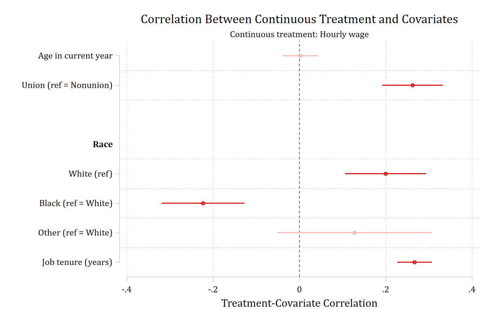

Continuous treatments
contreat(): correlations between a continuous treatment and the covariates
With a continuous treatment there are no groups to compare, so contreat(varname) assesses balance as the correlation between the treatment and each covariate: Pearson correlations for continuous covariates and polyserial correlations for binary indicators, with one indicator per category of a nominal covariate (including the reference category). The correlations come from the user-written polychoric command, which must be installed. Values closer to zero indicate less association between the treatment and the covariate.
Here hourly wage is the treatment:
sysuse nlsw88, clear(NLSW, 1988 extract)balanceplot age i.union i.race tenure, contreat(wage)NOTE: 378 observations were excluded due to missing data on
a covariate, contreat(), or outcome() variable.
Continuous treatment = wage (Hourly wage)
N used in correlation calculations = 1,868graph export "fig/contreat-default.png", replace width(1400)file fig/contreat-default.png saved as PNG format
The same plotting options
threshold(), absolute, sort, fadens, noci, level(), and graphop() work as they do with group(). With contreat() the threshold must be no greater than one.
balanceplot age i.union i.race tenure, contreat(wage) absolute sort threshold(.1)NOTE: 378 observations were excluded due to missing data on
a covariate, contreat(), or outcome() variable.
Continuous treatment = wage (Hourly wage)
N used in correlation calculations = 1,868graph export "fig/contreat-absolute.png", replace width(1400)file fig/contreat-absolute.png saved as PNG format
balanceplot age i.union i.race tenure, contreat(wage) fadensNOTE: 378 observations were excluded due to missing data on
a covariate, contreat(), or outcome() variable.
Continuous treatment = wage (Hourly wage)
N used in correlation calculations = 1,868graph export "fig/contreat-fadens.png", replace width(1400)file fig/contreat-fadens.png saved as PNG format
Tables
table reports each correlation and its p-value; tablefull adds the standard error and confidence limits.
balanceplot age i.union i.race tenure, contreat(wage) tableNOTE: 378 observations were excluded due to missing data on
a covariate, contreat(), or outcome() variable.
Continuous treatment = wage (Hourly wage)
N used in correlation calculations = 1,868
Treatment-covariate correlations: Hourly wage
Covariate | Correlat~n p-value
-------------------------+-----------------------
|
Age in current year | 0.002 0.923
Union (ref = Nonunion) | 0.262 0.000
-------------------------+-----------------------
Race |
White(ref) | 0.200 0.000
Black (ref = White) | -0.223 0.000
Other (ref = White) | 0.127 0.164
-------------------------+-----------------------
|
Job tenure (years) | 0.266 0.000 balanceplot age i.union i.race tenure, contreat(wage) tablefullNOTE: 378 observations were excluded due to missing data on
a covariate, contreat(), or outcome() variable.
Continuous treatment = wage (Hourly wage)
N used in correlation calculations = 1,868
Treatment-covariate correlations: Hourly wage
| | 95% CI | _
Covariate | Correlat~n SE | Lower Upper | p-value
-------------------------+------------------------+------------------------+-----------
| | |
Age in current year | 0.002 0.021 | -0.039 0.043 | 0.923
Union (ref = Nonunion) | 0.262 0.036 | 0.191 0.332 | 0.000
-------------------------+------------------------+------------------------+-----------
Race | | |
White(ref) | 0.200 0.048 | 0.106 0.293 | 0.000
Black (ref = White) | -0.223 0.049 | -0.319 -0.128 | 0.000
Other (ref = White) | 0.127 0.091 | -0.052 0.306 | 0.164
-------------------------+------------------------+------------------------+-----------
| | |
Job tenure (years) | 0.266 0.020 | 0.226 0.306 | 0.000 The correlations are returned in r(correlation).
Stored results
store(stub) posts one set, stub_correlation, with the correlations in e(b) and their squared standard errors on the diagonal of e(V):
balanceplot age i.union i.race tenure, contreat(wage) store(ct, replace)NOTE: 378 observations were excluded due to missing data on
a covariate, contreat(), or outcome() variable.
Continuous treatment = wage (Hourly wage)
N used in correlation calculations = 1,868esttab ct_correlation, se label mtitles------------------------------------
(1)
ct_correla~n
------------------------------------
Age in current year 0.00205
(0.0211)
Union 0.262***
(0.0359)
White 0.200***
(0.0478)
Black -0.223***
(0.0489)
Other 0.127
(0.0913)
Job tenure (years) 0.266***
(0.0204)
------------------------------------
Observations 1868
------------------------------------
Standard errors in parentheses
* p<0.05, ** p<0.01, *** p<0.001contreat() may not be combined with group(), base(), cohensh, or matchweight().